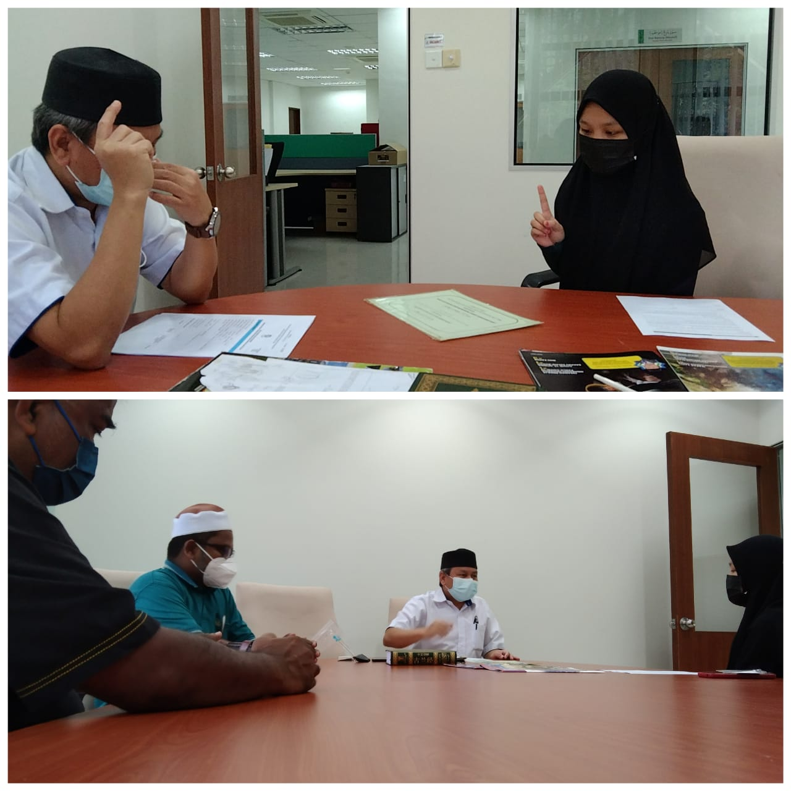

Official activity photo
Dakwah
New Muslim Guidance
Guidance and practical assistance for people learning about Islam and completing the recognised registration process.
Select card to see details ↻
Actual PERKIM activity
New Muslim Guidance
This official PERKIM Selangor gallery photograph shows representatives supporting a new Muslim during a guidance and registration session.
View official source ↗